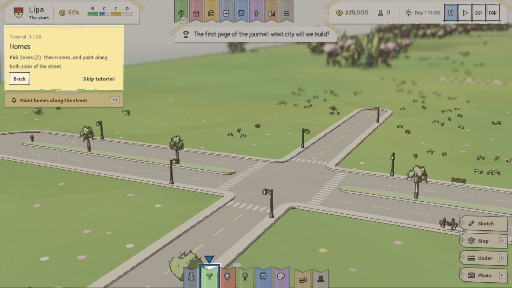
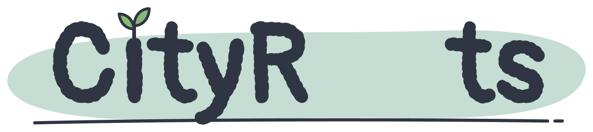
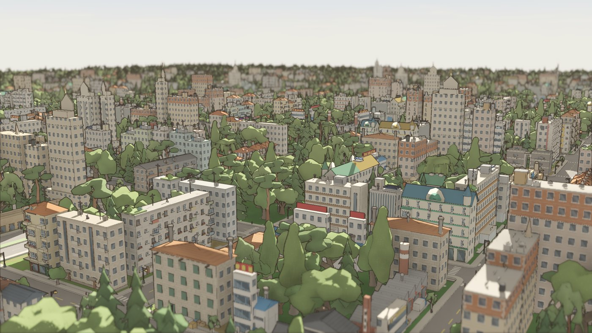
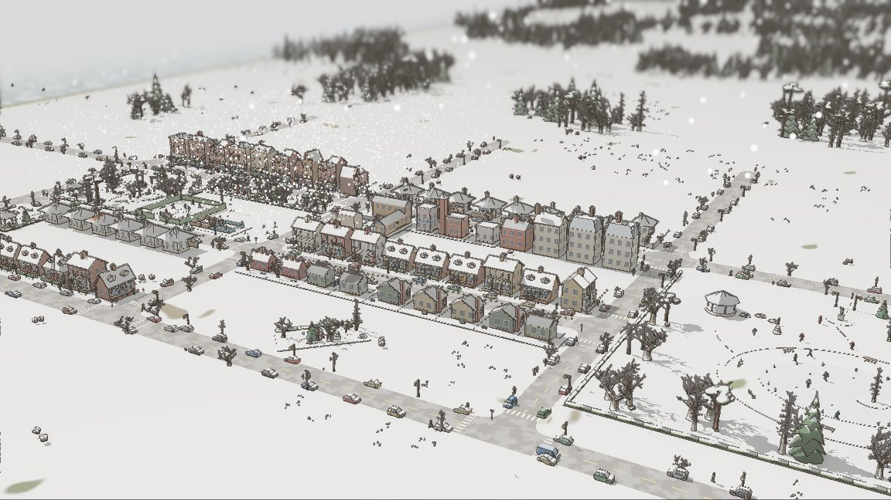
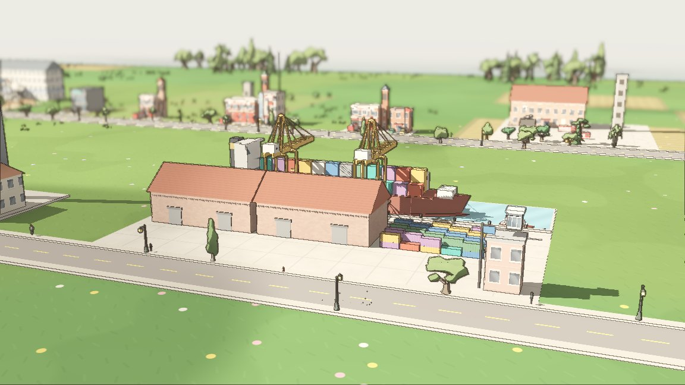
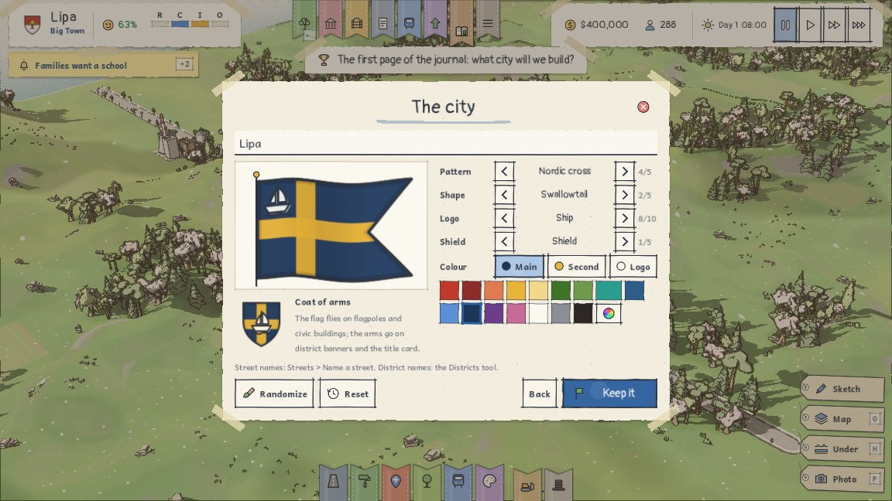
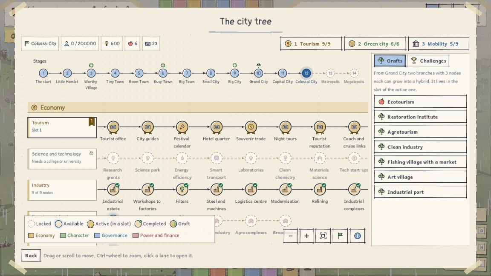
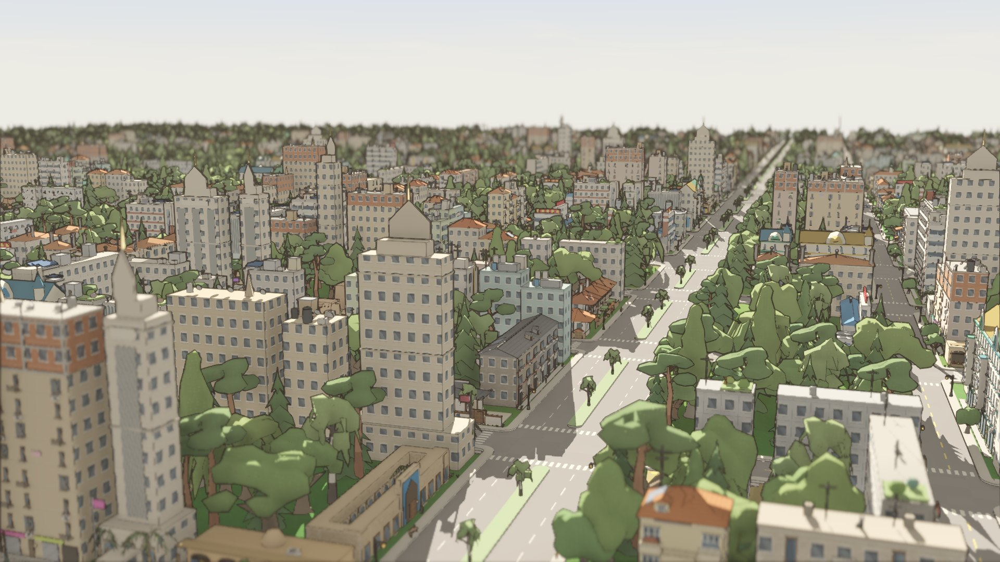

Roads like the real thing
Boulevards with planted medians, rounded kerbs, zebra crossings and a preview that shows exactly what will be built.

Build it. Shape it. Expand it.
A city builder drawn in a watercolour sketchbook. Lay curved streets, paint districts, shape the land and watch your town grow through the seasons. Free, for Windows and Mac.
Version 2.1.2 · Intel and Apple Silicon Macs · Windows without installing (.zip)
Draw streets at any angle, in curves or freehand. Junctions round themselves off, roundabouts are real rings, and roads climb hills with banks and cuttings instead of floating on top.
Zone homes, shops, offices and industry along them, or place hand-picked buildings from a gallery of real-world styles: low, mid or high rise, wall to wall or detached.


Boulevards with planted medians, rounded kerbs, zebra crossings and a preview that shows exactly what will be built.

Blossom in spring, leaves in autumn, snow on every roof in winter, and the music follows the hour and the season.

Fire stations, hospitals, stations, harbours, stadiums and power plants, each modelled on real places.

Five patterns, five shapes, ten emblems and any colour. It flies on the town's flagpoles and district banners.

Fourteen stages from hamlet to megalopolis, 22 branches to grow and grafts that mix two of them.

Traffic, buses, trams and people on the pavements; councils, budgets, festivals and the occasional flood.
macOS 10.13 or later. One app for Intel and Apple Silicon.
Free to download and play.